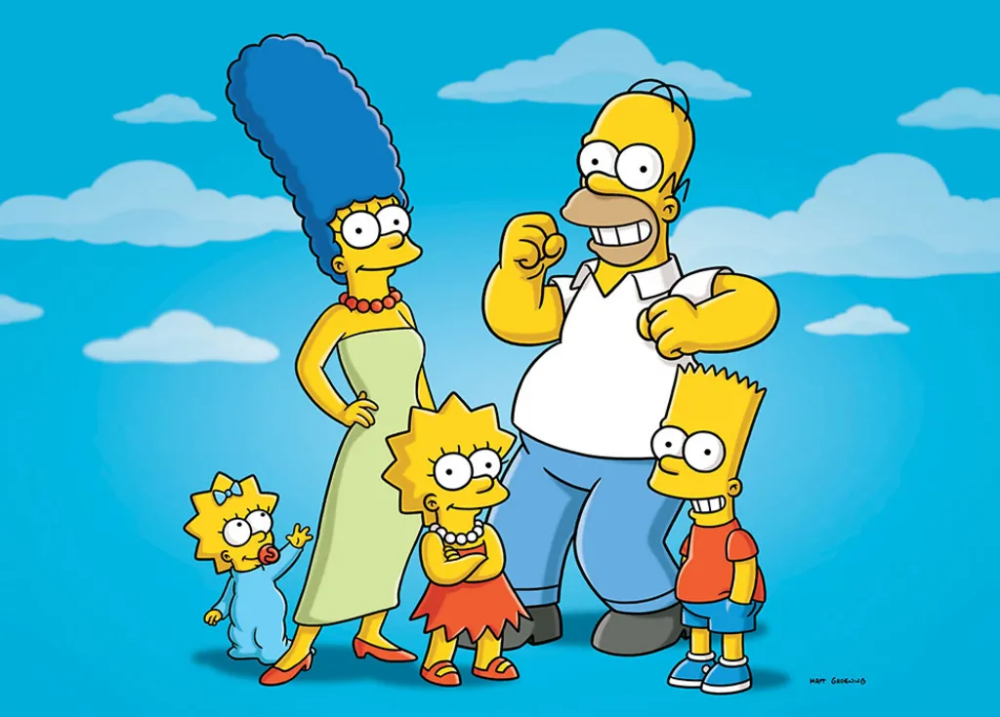

Lab 4. Final Project Plan
PUBH 6199: Visualizing Data with R, Summer 2025
2025-06-12
Outline for today
- Overview of common public data repository for developing data visualization projects
- Form final project teams
- GitHub flow for project collaboration
- Project Kick-off
Where to start
- The world is full of data—but finding the right dataset takes intention.
- Good datasets are:
- Publicly accessible
- Clean or well-documented
- Relevant to your story
- GW Library has a research guide that can help you get started.
Large, searchable databases
- Google Dataset Search
Like Google, but just for datasets. - Kaggle Datasets
Great for curated and crowd-sourced datasets across domains. - UCI Machine Learning Repository
Classic datasets for machine learning and data science. - Harvard Dataverse A repository for sharing and archiving research data, open to all researchers regardless of Harvard affiliation.
- ICPSR
Inter-university Consortium for Political and Social Research, an international consortium of more than 810 academic institutions and research organizations, with a focus on social science data.
Government & intergovernmental data
- Data.gov U.S. government datasets across topics.
- US Census Data Demographic, economic, and geographic data from the U.S. Census Bureau.
- EU Open Data Portal Datasets from the European Union institutions and bodies.
- World Bank Data Global development indicators and statistics.
- UN Data United Nations datasets on various global issues.
- OECD Data Economic and social data from OECD countries.
- China Data Archive A collection of datasets related to China, including social, economic, and environmental data.
- openAFRICA A platform for sharing open data from Africa, including government, NGO, and private sector datasets.
Curated & community data sources
- Tidy Tuesday Weekly data challenges with R, great for practice.
- Makeover Monday Weekly data visualization challenges with a focus on redesigning existing visualizations.
- Tableau: Free Public Datasets
Explore and download public visualizations and underlying data. - Data for Good at Meta Meta’s Data for Good program provides access to datasets for social good projects.
- AWS Data Exchange
Amazon Web Services’ marketplace for data, including free and paid datasets across various domains. —
R packages with built-in data
fivethirtyeight– Datasets from FiveThirtyEight journalismgapminder– Development stats across countriesbabynames– U.S. baby name trends (SSA)nycflights13– Flight data from NYC airports in 2013dslabs,DAAG,MASS– Rich with demo data
Spatial & environmental data
- EnviroAtlas
EPA EnviroAtlas, a collection of spatial data on environmental and human health. - National Centers for Environmental Information
NOAA’s National Centers for Environmental Information, providing access to climate and weather data. - USGS Earth Explorer U.S. Geological Survey’s Earth Explorer, a tool for searching and downloading satellite imagery, aerial photography, digital elevation model data, land cover data, and many others.
- SEDAC (Columbia Univ.) Socioeconomic data and applications center, synthesizes earth science and socioeconomic into gridded data
Public health & healthcare data
- CDC Data & Statistics
Public health datasets from the Centers for Disease Control and Prevention. - National Environmental Public Health Tracking Network
CDC’s Environmental Public Health Tracking Network, providing data on environmental hazards and health effects. - WHO Global Health Observatory World Health Organization’s data on global health indicators.
- HealthData.gov U.S. health datasets, including Medicare, Medicaid, and public health data.
- NCHS Data National Center for Health Statistics datasets on health statistics in the U.S.
Pro Tips
- Start with your story → then find data
- Prioritize quality over size
- Double check data license and usage rights
- Document your data source in your project
Now let’s explore and build something great!
Outline for today
- Overview of common public data repository for developing data visualization projects
- Form final project teams
- GitHub flow for project collaboration
- Project Kick-off
Introducing the five fantastic teams!
Team Homer
Members: Alia Jamil, Nina Wubu
Topic: Climate, natural disasters and health disparities

Team Marge
Members: Amel Attalla, Belen Zemas
Topic: Sexual health and vulnerable populations

Team Bart
Members: Sora Ely, Ashlan Jackson
Topic: Health systems and global health

Team Lisa
Members: Riya Belani, Molayo Ifebajo
Topic: Behavioral health and digital platforms

Team Maggie
Members: Jordi Fischbach, Ahmed Shah
Topic: To be determined

Outline for today
- Overview of common public data repository for developing data visualization projects
- Form final project teams
- GitHub flow for project collaboration
- Project Kick-off
Introducing GitHub Flow
Image by Yan Min Thwin
Create local branches with Git
Tip
You can do these using the Git GUI in RStudio, I am showing you the command line version so you can learn a different method and choose what you prefer.
- In RStudio click the Terminal tab in the lower left pane, next to the Console tab
Note
If you cannot find the Terminal tab, you can also open a terminal window by clicking on the Tools menu and selecting Terminal > New Terminal. If that doesn’t work, check if your RStudio is out of date. Click Help, About RStudio to check the current version.
Create local branches with Git
- In the terminal, type the following command to create a new branch called
feat/clean-data:
Make local changes with Git
In RStudio, open the 4-lab4.qmd file and make some changes to the text.
For example, you can add a new section called “Data Wrangling” and write a few sentences about what tidy data is about.
You can also add a new code chunk to the file and write some R code to load the tidyverse package and read in a CSV file.
After you are satisfied with your changes, save the file and knit the 4-lab4.qmd file to generate the HTML file.
Commit local changes with Git
- Determine your file’s status.
You should see a message that says “On branch feat/clean-data” and “Changes not staged for commit”.
- Add the changes to the staging area.
- See your file’s current status.
Your files should be listed under Changes to be committed.
- Commit the changes with a message. Replace
with a log message describing the changes.
Open a pull request on GitHub
- Push the changes to the remote repository, replace
with the name of your branch, in this case feat/clean-data
- Navigate to your GitHub repository in your browser
- Click the Compare & pull requests button, if you don’t see it, navigate to the “Pull requests” tab and click the New pull reques button.
- In the “Open a pull request” page, enter a title and description for your pull request. You can add a reviewer, for example your teammate on this pull request.
Merge your pull request on GitHub
Note
Since this is your repository, you probably don’t have anyone to collaborate with (yet). Go ahead and merge your Pull Request now. Later in the semester you may want your teammate to look over your code before they merge.
- On GitHub, navigate to the Pull Request that you just opened.
- Scroll down and click the big green Merge Pull Request button.
- Click Confirm Merge.
- Delete the branch
.
Reference: GitHub and RStudio
Congratulations
You have become a better collaborator!

Source: Allison Horst and Julia Lowndes
Outline for today
- Overview of common public data repository for developing data visualization projects
- Form final project teams
- GitHub flow for project collaboration
- Project Kick-off
Grading
| Assignment | Description | Weight |
|---|---|---|
| Project proposal | You did this for HW3. Outlines your topic, research questions, and initial ideas | 7% |
| Project plan | You are doing this for Lab4. Includes your final topic, selected data sources, and visualization plan | 3% |
| Project prototype V1 | You will bring this to class on June 24th and meet one-on-one with the teaching team to get feedback | 7% |
| Final data visualization product | Include at least three polished visualizations that answer your research questions | 18% |
| Final project presentation | You will present your project in a short, engaging walkthrough in class on June 26th | 10% |
| Peer evaluation for final project | You will complete this in class on June 26th to provide constructive feedback to your peers | 5% |
Project schedule
| Week | Due date | Deliverable |
|---|---|---|
| 4 | June 9 | Project proposal |
| 5 | June 16 | Project plan |
| 6 | June 24 | Project prototype V1 |
| 6 | June 26 | Final data visualization product |
| 6 | June 26 | Final project presentation |
| 6 | June 26 | Peer evaluation for final project |
Team policies
- How and when you will meet: regular meeting time
- How you will communicate: Slack, email, etc.
- How you will collaborate on implementation: GitHub, Google Drive, etc.
- How you will review each other’s work: code reviews, feedback sessions, etc.
- How you will deal with non-performing members: discuss openly, involve a neutral party if needed, etc.
In-Class Activity:
- Fill in the team expectation agreement in
4-lab4.qmd - Start a TODO list, including:
| Task | Deadline | Person responsible |
|---|---|---|
| (e.g.) set up GitHub repo | June 13 | Silas |
10:00
Project plan
- Name of all students who worked on this project plan
- Team name
- Define the topic, goals, and tasks of your project (300 - 400 words)
- A description of the data you will use, including:
- Source of the data
- How you will access the data
- Any data cleaning or wrangling you anticipate needing to do
- At least 3 sketches of visualization ideas for your project
- A sketch of your dashboard layout/storytelling flow
- A project timeline with milestones when you will complete each task
- A feature list (must-have, good-to-have, optional)
- A description of team roles and responsibilities
Prototype V1
- Data scraping and cleaning complete (using real world datasets, do not use R built-in data)
- At least one visualization already implemented, and draft for 2-3 more visualizations
- If choosing R shiny app, rough webpage design and structure has to be done and implemented (placeholders for visualizations)
- If choosing the other two options, clear outline and storytelling flow of the visualizations
- A README.md file in your GitHub repo that describes your project, how to view it, and any dependencies
Final data visualization product
Choose one from the following three options:
Same Question, Different Audiences (3 static charts): Create three visualizations that answer the same question, each designed for a different audience (e.g., general public, policy makers, technical experts).
Same Data, Different Questions (3 static charts): Use the same dataset to answer three different but related questions, each with its own focused visualization.
Interactive Dashboard (1 app with 3 components): Build an interactive dashboard (e.g., with shiny, plotly, or similar tools) that includes at least three visual components for exploring your data dynamically.
Accompanying your visualizations, you should also include a write-up around 500-1000 words that consists of an introduction, research questions, data sources, data wrangling, data visualizations, findings, and conclusion.
Final project presentation
- 10 minutes presentation
- What questions do you set out to answer with your visualizations? Why are they important?
- Your data source and why they are chosen to answer your questions
- Your intended audience
- Two to three visualization design choices and how they help tell your story
- Two to three takeaways from your visualizations that your audience should remember
- Live demo of your visualizations (if applicable)
- One to two challenges you encountered during this project and how you overcame them
- One to two achievements you are proud of in this project
- The presentation format is flexible, bring your laptop to present, and submit the presentation and final data visualization product as
HW6
Evaluation
Source: CS171
Evaluation methods
What to evaluate?
- Target:
- choose domain: did you correctly understand users’ needs?
- define question: are you showing them the right thing?
- Design:
- design visual encoding: does the way you show the data work?
- Implement:
- implement visualization: does the code work? is it scalable?
How to evaluate?
- Qualitative:
- Observational studies (“think aloud”)
- Expert interviews (design critiques)
- Focus groups
- Quantitative:
- A/B testing
- Surveys
- Analytics (e.g., Google Analytics, Shiny Dashboard logs)
Think aloud study
- Naive (first time) users
- No explanations and interference by evaluator
- “We are testing the system, not you.”
- “Will not answer any questions once started.”
- Remind subjects to talk about what they are doing
In-Class Activity: Think aloud study demo
ClimaWATCH
https://climawatch.climate.mathematica.org/
Imagine you’re briefing a policymaker about heat risks in vulnerable counties. What would you show them from this tool?
10:00
End-of-Class Survey
Fill out the end-of-class survey
~ This is the end of Lab 4 ~
10:00

PUBH 6199: Visualizing Data with R